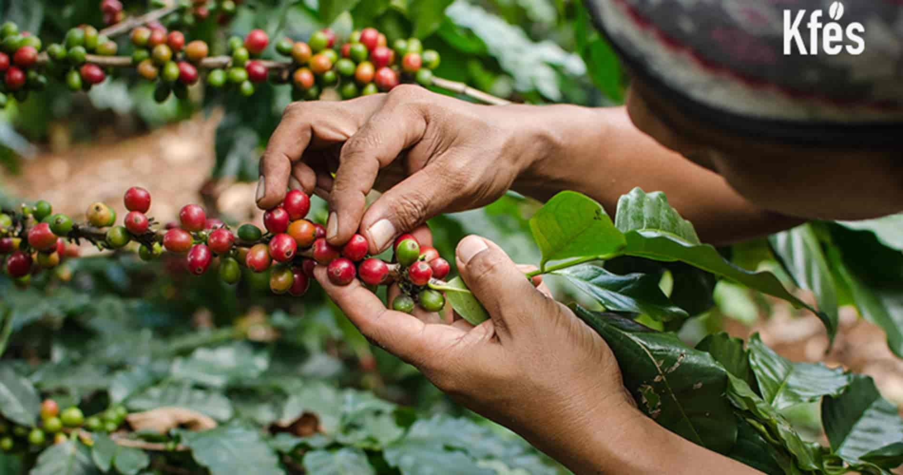

<!DOCTYPE html>
<html lang="es">

<head>
    <meta charset="UTF-8">
    <meta name="viewport" content="width=device-width, initial-scale=1.0">
    <title>2º Trimestre</title>
    <link rel="stylesheet" href="proyecto.css">
</head>

</html>

<body>

    <header class="encabezado">
        <div class="contenedor">
            
            <h1 class="texto_header">
                Guía sobre el café de especialidad o «Specialty Coffee»
            </h1>
        </div>
    </header>
    <section class="seccion_1">
        <div class="texto_1">
            <h2 class="h2_1">
                <u>¿Qué es el café de especialidad o “specialty coffee”?</u>
            </h2>
            <p class="p1">
                El specialty coffee, café especial o el café de especialidad, es un tipo de café que se caracteriza por
                su proceso artesano. Es decir, desde su recogida, su tratado, almacenamiento, su tostado hasta su
                envasado y consumo final. Solo de esta forma se consigue un café de calidad o de gama alta. Otra forma
                de definir el café de especialidad en el sentido más amplio, es el café que ha superado de forma
                artesanal todos los procesos desde el árbol hasta la taza. Esta tendencia está cobrando fuerza en España
                donde los consumidores que se consideran “cafeteros” son más conscientes del sabor y el aroma que aporta
                esta bebida. Una característica de este tipo de café es que no necesita azúcar porque no tiene defectos
                que camuflar. El sabor de un buen café es aromático, dulce y suave, a diferencia del industrial que
                suele ser amargo, de ahí la cultura de echar azúcar al café. Otro aspecto a destacar del café de
                especialidad es su origen. Al igual que las verduras o frutas, el café es un fruto que se recolecta por
                temporada. En algunas regiones será en una época del año y en otras en otra. Por ejemplo, en primavera
                los granos de café de especialidad provendrán de países como África del Este, Etiopía, Kenia o Ruanda.
                Este es el motivo por el que no encontraremos specialty coffee en cantidad en los supermercados.
                Hablamos de un producto de alta calidad. Por otra parte, el rol de barista es imprescindible ya que
                incluye la molienda del café. No solo sabe qué tipo de molienda es necesaria para cada variedad de café,
                sino que también conoce los tipos de molinos y los sabe calibrar. En conclusión, podemos afirmar que el
                café de especialidad es aquel que cumple las siguientes premisas:
            </p>
            <ul class="p1">
                <li>Ser 100% de <a class="enlace"
                        href="https://concafe.es/tipos-de-cafe-en-grano-cafe-arabica-y-cafe-robusta/"><u>variedad
                            arábica</u></a></li>
                <li>Tener un proceso desde su siembra hasta la taza totalmente artesano</li>
                <li>Los granos de café han de ser recolectados en su punto óptimo de madurez</li>
                <li>Proceder de granos de café de temporada</li>
                <li>Tener una puntuación de 80/100 puntos de acuerdo con el sistema internacional para la evaluación de
                    la calidad. Este valor lo otorga un Q Grader o catador certificado basándose es estándares de la SCA
                    (Specialty Coffee Association)</li>
            </ul>
            <p class="p1">
                Con el paso de los años el mundo del café se ha ido profesionalizando, en gran parte, gracias a la
                Asociación de Cafés Especiales SCA (Specialty Coffee Association). Esta Institución ha conseguido con su
                gestión de eventos exclusivos para el mundo del café y sus certificados de catación integrar los grandes
                sectores industriales y cafeteros del mundo en esta cultura del café.
            </p>
            <div>
                
            </div>

        </div>
        <div class="texto_1">
            <h2 class="h2_1">
                <u>¿Qué es la Speciality Coffee Association SCA?</u>
            </h2>
            <p class="p1">
                La SCA es una asociación sin fines de lucro que representa a miles de profesionales del café, desde
                productores hasta baristas de todo el mundo. Esta organización surge en el año 2017 tras la fusión de
                otras dos asociaciones: la SCAE (Specialty Coffee Association of Europe) y a SCAA (Specialty Coffee
                Association of America). Durante el año organizan eventos como ferias internacionales para dar a conocer
                el café de especialidad. Del mismo modo, informan del cuidado de la calidad del café tanto a los
                productores como a los consumidores de acuerdo con la FAO (Organización de las Naciones Unidas para la
                Alimentación y la Agricultura) en Latinoamérica junto con el Caribe, las regiones productoras de café de
                mayor importancia en el mundo al ser la que cuentan con la mayor producción. Por otra parte, la SCA es
                la única organización institucional que promueve la educación en el mundo del café con diferentes
                módulos que abarcan desde barista a catador, pasando por tostador, café verde o brewing. Los formadores
                imparten cursos por todo el mundo y su formación es reconocida internacionalmente. Esta es la única
                certificación del mundo del café reconocida en más de 100 países como la principal fuente de
                conocimiento y de preparación de los más grandes profesionales del café.
            </p>
        </div>
        <div class="texto_1">
            <h2 class="h2_1">
                <u>¿Qué promueve la SCA?</u>
            </h2>
            <p class="p1">
                La SCA promueve la educación en el mundo del café y la promoción del café de especialidad. Entre sus
                diversos programas educativos se encuentran el Programa de Habilidades del café, el de Sostenibilidad
                del Café y el de Técnico del café, entre otros. Desde la SCA se recomienda empezar siempre por el nivel
                de iniciación de cualquiera de sus módulos, aunque si la persona tiene experiencia, puede hacerlo por el
                nivel intermedio. Con estos ciclos formativos, el proceso de selección del café y las ferias, la SCA
                intenta dar a conocer al mundo la importancia del café de especialidad. Hablamos de un mercado que está
                creciendo gracias a un público que aprecia cada vez más el sabor del café y a unos productores que están
                dispuestos a ofrecerlo a buen precio. Por este motivo, sus programas formativos están dirigidos a
                profesionales del sector como los baristas y los productores de café y también a los consumidores.
            </p>
        </div>
        <div class="texto_1">
            <h2 class="h2_1">
                <u>¿Qué diferencia un café con el sello de la Speciality coffee Association?</u>
            </h2>
            <p class="p1">
                Un café que tenga el sello de la SCA es un café de especialidad. Ahora vamos a hacer un resumen de los
                aspectos que determinan las diferencias entre el café comercial y el specialty coffee:
            <ul class="p1">
                <li>El proceso de recolección se realiza en su punto óptimo, es decir, cerezas rojas. Este es importante
                    no solo para conseguir el verdadero aroma del café ya que si la cereza es inmadura o sobremadura
                    tiende a generar un sabor amargo. La recolección se hace a mano para separar las que son aptas de
                    las que no.</li>
                <li>El descarado. Es el momento en el que se aplica el segundo control de calidad. Incluso las cerezas
                    rojas y maduras pueden tener desperfectos así que hay que mirarlas de nuevo para que ver esos fallos
                    que no se aprecian a simple vista.</li>
                <li>El tostado. El punto del grano del café se mide hasta que llega su prueba final, servirlo en la
                    taza. Dependiendo de la densidad, el color y el aroma, se sabrá si es un café de especialidad apto
                    para su consumo.</li>
            </ul>

            </p>
        </div>
        <div class="texto_1">
            <h2 class="h2_1">
                <u>¿Cómo se puede obtener el certificado de la SCA?</u>
            </h2>
            <p class="p1">
                Cuando se quiere determinar la calidad del café, se sigue un protocolo estandarizado de la SCA. En este
                proceso se analizan granos de café para determinar su defecto y es necesario que se informe de su origen
                para poder tener la trazabilidad de su proceso. Durante la cata, realizada por un catador profesional
                (Q-Grader), se determinan los siguientes factores:
            <ul class="p2">
                <li>Fragancia /aroma</li>
                <li>Sabor</li>
                <li>Sabor residual</li>
                <li>Acidez</li>
                <li>Balance</li>
                <li>Cuerpo</li>
                <li>Dulzor</li>
                <li>Puntuaje del catador</li>
                <li>Uniformidad</li>
                <li>Taza limpia</li>
            </ul>
            <p class="p2">Del mismo modo, para saber la puntuación se miran los siguientes aspectos:</p>
            <ul class="p1">
                <li>Para la categoría 1, el café de especialidad no puede tener ningún defecto.</li>
                <li>Para conseguir la categoría 2 se permiten hasta 5 defectos: granos de café partidos, inmaduros,
                    arrugados, que floten, con pergamino, aplastados, esponjosos, con cáscara, veteados o con conchas.
                </li>
                <li>Para obtener una muestra del grano de café se deben aportar unos 350 gramos.</li>
                <li>El nivel de luz sobre la mesa donde se inspeccionan los granos de café para su evaluación debe ser
                    de al menos 4000 kelvin (K)/1200 Lux (lx)/120 velas de pie (fc).</li>
                <li>Los granos de café han de tener una humedad menor de 0,70aw.</li>
                <li>La variedad debe ser 100% arábica.</li>
            </ul>
            <p class="p1">La puntuación que para conseguir el certificado de la SCA debe ser más de 80/100 de acuerdo
                con su sistema
                internacional de evaluación de calidad. Esta valoración la otorga un Q Grader o catador certificado. En
                Concafé contamos con café de especialidad de la marca Kfé procedente de sistemas de agricultura
                sostenible y
                con el certificado de la SCA.</p>
            </p>
            
            <p class="p1">Aunque el café de especialidad cada vez consigue más adeptos, lo cierto es que aún existe
                mucho
                desconocimiento sobre este concepto y cómo elaborarlo. Muchas personas piensan que su diferencia reside
                en el método de extracción, no obstante, esto es solo una parte que cumple el café de especialidad. </p>
        </div>
        <div class="texto_2">
            <h2 class="h_1">
                Pasos de la producción del café de especialidad
            </h2>
            <p class="p1">
                Como hemos visto, el café de especialidad es aquel que es evaluado por catadores y que cumple una
                puntuación específica. Este valor mide desde la producción del grano hasta la taza, es decir, desde el
                origen del café, la selección y plantación, el tostado, la preparación del barista hasta sus
                características en taza como la acidez y el dulzor. Todo este proceso se conoce como trazabilidad. El
                inicio de todas las fases es su producción. La agricultura sostenible es la primera diferencia que
                encontramos entre el café de especialidad y el comercial. Es decir, para la elaboración de granos de
                café specialty se utilizan técnicas de cultivo ecológicas para obtener sabores únicos en taza. Del mismo
                modo, las óptimas condiciones climatológicas son imprescindibles para conseguir la mayor calidad del
                café. Para lograrlo, el cultivo del café de especialidad se lleva a cabo en regiones específicas con
                condiciones especiales de altura, humedad, sombra y temperatura. Todo el proceso es plenamente
                artesanal.

            </p>
        </div>

        <div class="texto_2">
            <h2 class="h_1">Recolección de la baya de café</h2>
            <p class="p1">Dependiendo de la variedad del cafeto, la semilla se puede cosechar una o dos veces al año en
                algunos
                países. Esto nos indica que el café, al igual que la fruta o la verdura, se produce por temporada. La
                recolección se lleva a cabo una vez que las cerezas del café estén en su momento óptimo. La recogida se
                hace
                a mano, de forma minuciosa y cuidada, sin utilizar maquinaria industral.</p>
            <h3 class="h_1"> Despulpado del fruto</h3>
            <p class="p1"> Los recolectores se encargan de extraer las cerezas del café y seleccionarlas para dar paso
                al despulpado
                que consiste en separar la parte carnosa del fruto del grano del café. Por este motivo es muy importante
                asegurarse que las cerezas del café no estén demasiado verdes o maduras para su producción. Acto
                seguido, se
                pasa al beneficiado del café. En este paso se distinguen dos métodos: el beneficiado húmedo (se obtienen
                cafés lavados o suaves) y beneficiado seco (se consiguen los cafés naturales o no lavados). Con el
                método de
                beneficiado húmero se desgrana el café, se saca el mucílago y se procese a lavar y a secar la semilla.
                Este
                es el proceso más común y es el que se usa en el café de especialidad. De esta forma se obtiene, tras su
                secado, el café oro pergamino. Por último, para conseguir el grano verde se sigue con el morteado donde
                se
                elimina el pergamino o la cascarilla que tienen los granos. Aquí se separan los granos con algún defecto
                para café comercial y los óptimos para el de especialidad. Tueste El tiempo máximo de un grano de café
                verde
                es de un año. Para conseguir la mayor calidad, se tuesta en las tempranas épocas del grano. Este paso es
                muy
                delicado pues es de donde se obtienen los sabores, aromas y olores que tendrá el café en la taza. Cuando
                se
                haya tostado, habrá que enfriar el café. Este método se llama enfriamiento por aire que es que deja
                intacto
                los mejores aromas y preserva mejor el café de cualquier resto de humedad.</p>
            <h3 class="h_1"> Pasos para elaborar un café de especialidad</h3>
            <p class="p1">Una vez que el café de especialidad ha sido cultivado, recolectado y procesado, llega el
                momento de
                prepararlo para su consumo final.</p>
            <h3 class="h_1"> Molienda del café</h3>
            <p class="p1"> Cuando se muele el café, los procesos de oxidación se aceleran por ello hay que consumirlo
                antes de 3 días.
            <p class="p1"> Cuando se muele el café, los procesos de oxidación se aceleran por ello hay que
                consumirlo antes de 3 días.
                Lo ideal es molerlo justo antes de su consumo por lo que cada preparación del café conllevará un
                molido.
                Cuidado con los molinos de baja calidad ya que pueden provocar “finas”. Las finas son partículas de
                café muy
                pequeñas que pueden generar una preparación turbia si no se remueven con una filtración. Debido a su
                pequeño
                tamaño, se extraen rápidamente provocando un sabor no deseado.</p>
            <h3 class="h_1"> Extracción y solubilidad del café</h3>
            <p class="p1"> La extracción es el método por el que disolvemos los sabores y otros componentes del
                café tostado y molido.
                Los primeros compuestos que se extraen son las notas frutales y ácidas, seguidas de las notas dulce,
                el
                equilibrio y, finalmente, el amargor. Una mala extracción no aportará dulzor sino un ligero amargor
                que hace
                que el sabor del café se torne a amargo. Para obtener la mejor solubilidad y extracción del café hay
                que
                ajustar el tipo de molienda a cada tipo de café o la temperatura del agua, entre otros factores.
                Todos estos
                aspectos son regulables con las cafeteras superautomáticas Jura con el fin de que obtengan el mejor
                café de
                calidad dependiendo del tipo de grano y del tipo de café que quieras elaborar. La producción del
                café de
                especialidad es una apuesta novedosa con la que conseguir un
                <a class="tipo" href="https://concafe.es/cuantos-tipos-de-cafe-se-pueden-preparar/"><u>tipo de
                        café</u></a> que se
                compromete con el
                medio
                ambiente y la naturaleza. Cada uno de sus procesos se realizan con cuidado y tienen su propia
                importancia.
                No podemos pasar ninguno por alto, incluso el de la preparación del café para la taza.
            </p>
            <h3 class="h_1"> Diferencias entre un café de especialidad y un café de comercial</h3>
            <p class="p1"> Como hemos visto hasta ahora, todo café que obtenga una calificación mayor a 84 puntos
                en una escala de 100
                según el SCAE es denominado de especialidad. Esta valoración se la proporcionan catadores
                profesionales que
                valoran todos los aspectos desde el grano hasta su sabor en taza. No obstante, existen otras muchas
                diferencias entre el café de especialidad y el café comercial. Vamos a detallar cada una de ellas:
            </p>
            <ul class="p1">
                <li>Sabor y aroma: mientras que el specialty coffee tiene un sabor aromático y dulce, el café
                    comercial es mucho
                    más amargo y apenas se pueden distinguir sus matices.</li>
                <li> Tipo de grano: el café de especialidad es 100% arábico y su grano es recolectado en el momento
                    de maduración
                    óptimo de cada tipo de café. Esto repercute no solo en su sabor sino también en su precio.
                    Además, el grano
                    de café de especialidad no tiene defectos mientras que el comercial sí.</li>
                <li>El proceso: el café de especialidad pasa por diversos controles de calidad y una recolección
                    manual. El café
                    comercial tiene un proceso más industrializado por lo que el mimo y la atención que se presta en
                    un sistema
                    artesano se diluye o se pierde.</li>
                <li>El tueste: el café comercial suele llevar meses tostado por lo que pierde su calidad. Del mismo
                    modo, sus
                    tuestes son más altos, lo que permite unificar y enmascarar los sabores de los granos
                    defectuosos. El
                    specialty coffee es recién tostado para que no pierda su esencia. De hecho, en el packaging de
                    los cafés de
                    especialidad se informa en su etiqueta de la fecha de tueste, origen, la finca, la altura, el
                    proceso y la
                    variedad. Estos datos no aparecen en el café comercial.</li>
                <li>Responsabilidad social: el café de especialidad cuenta con una responsabilidad social en donde
                    se han de
                    cumplir unos valores éticos y medioambientales mínimos. Esto no ocurre con el café comercial.
                </li>
            </ul>
        </div>
    </section>

    <footer>
        <div class="footer-content">
            <p>&copy; 2025 Coffee Switch. Todos los derechos reservados.</p>
            <nav>
                <a href="/privacidad">Política de privacidad</a> |
                <a href="/terminos">Términos y condiciones</a>
            </nav>
            <div class="social-media">
                <a href="https://facebook.com" target="_blank">Facebook</a> |
                <a href="https://twitter.com" target="_blank">Twitter</a> |
                <a href="https://instagram.com" target="_blank">Instagram</a>


            </div>


            <!-- Al final de tu página -->
            <a href="#" title="Volver arriba">Volver arriba</a>

        </div>


    </footer>


</body>